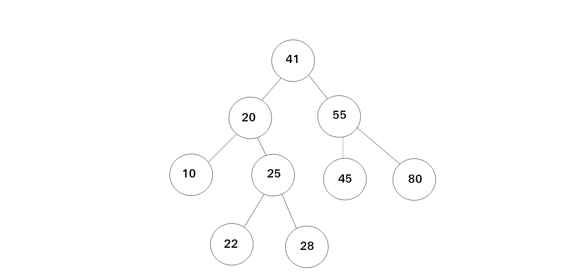
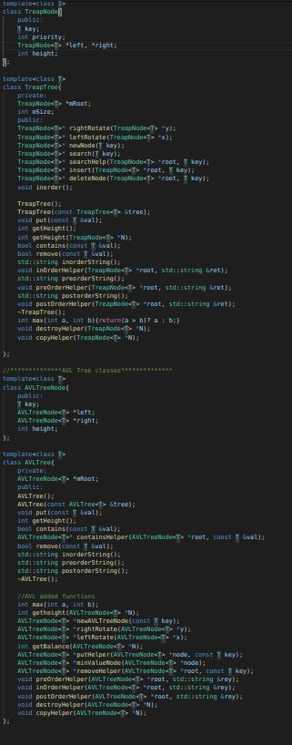
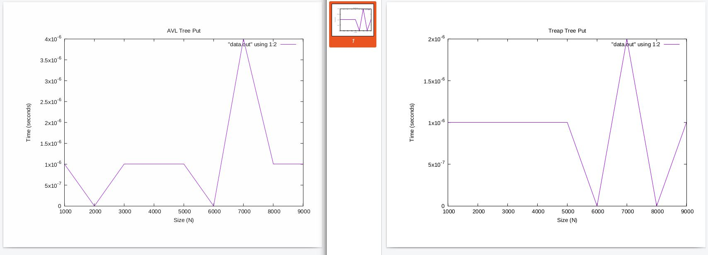
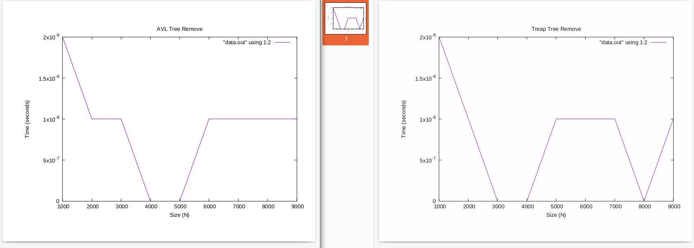

BALANCED BINARY SEARCH TREE(AVL AND TREAP IMPLEMENTATION)

This project was a research project in my Data Structures class to compare two different implementations of a balanced binary search tree. I chose to compare the AVL and Treap versions of the BST. I then implemented these two versions of the balanced binary search tree, and then picked two functions to see the timing efficiency between the AVL and Treap trees. Those timings for the “Put” and “Remove” functions are included in the pictures below.
Here is the header file that I used, I included this to give a better picture of the functions that I used to implement the templated trees as per the requirements of the project.

Below are the timing differences between the AVL and Treap Trees.

